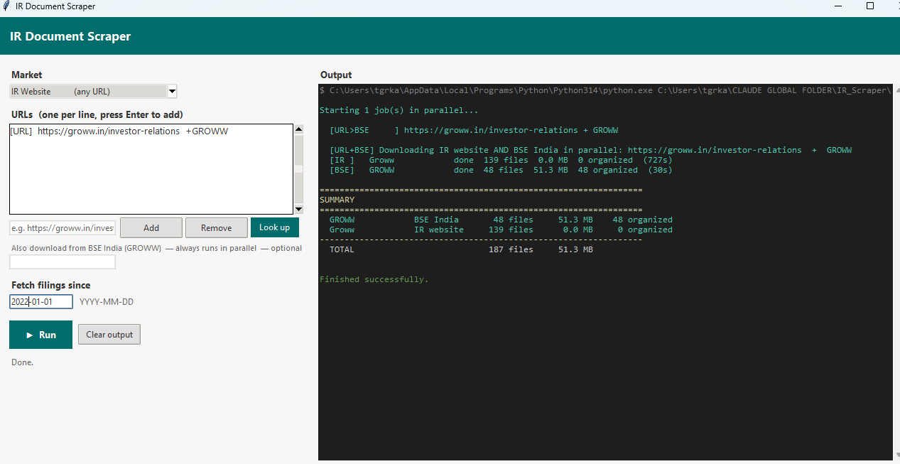
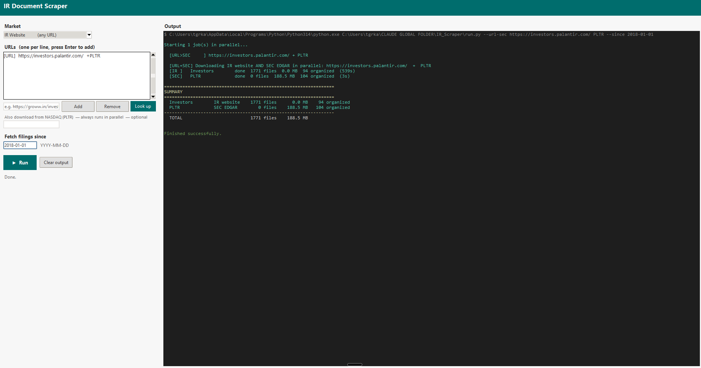
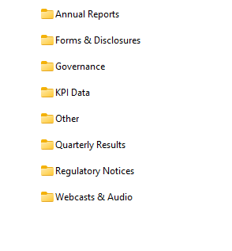
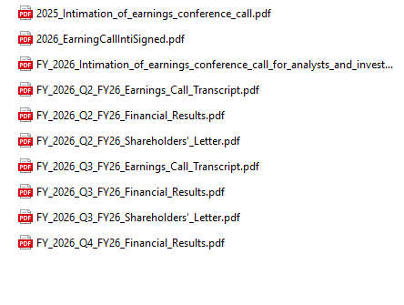
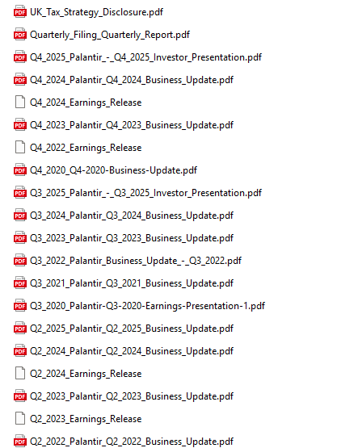

I built a single scraper that works on any public company's investor relations website — no site-specific code, no manual downloads. It classifies IR sites into eight platform types, handles four major anti-bot systems, and uses a dual-mode architecture (lightweight HTTP session + full Playwright browser fallback) to pull documents reliably at scale. On top of the scraper, I built a GUI where you type in a company name and get back an organized library of filings — sorted into folders by type, named by quarter — ready to feed into an LLM for research. This post covers how the scraper works, what made it hard to build, and what the output actually looks like.
As LLMs got more powerful in 2025, I began to realize that databases which organize and offer easy access to financial data became a bottleneck in my research process. Most of these database tools (like Koyfin, screenr.in etc) had been slow to introduce AI and LLMs on top of their existing data. Even if they do, you aren’t sure of the auditability of the data. Most approaches that databases follow are as simple as a Ctrl-F equivalent, grep function. Platforms like Alphasense, Quartr Pro follow more sophisticated approaches, like allowing Claude Sonnet or ChatGPT search functionality atop company public data.
Investor relations’ websites for publicly listed companies are the most comprehensive source of ground truth for corporate filings, public disclosures, financials, shareholder letters, etc. that a company puts out. So I had this idea of writing a scraper that goes directly to an investor relations website and downloads all documents put up there.
I wanted to see if and how I could bypass databases that save these documents in their formats and eventually charge significant dollars behind paywalls to access them.
I started with a simple question: Can I build a scraper that scrapes the investor relations websites of the companies I study and builds me a database I could then use to unleash the power of Gemini or Claude?
… and one of the annoying things I discovered in the process was how different investor relations websites for every company are.
This was one of the first products that I started building using LLMs, as early as September 2025. First attempt was with Gemini. The scraper somewhat worked but I started running into a lot of edge cases and problems with companies that had different web layouts, as you will reading through this post.
I realized that while every public company has an investor relations website, most of them are not designed for a retail investor’s ease of access. They also are designed to resist automated access. Most IR sites deploy the same arsenal: Cloudflare WAF, Akamai Bot Manager, PerimeterX, rate limiting, cookie consent walls, region gates. They do this to block scrapers. Which is precisely what I needed to build.
The question I started with: can a single scraper work on any company’s investor relations website without needing site-specific code? I track about 75 companies and have about 25 in my portfolio. I did not want 20+ scrapers.
I wanted one.
I revisited building the scraper again earlier this year in January, once I started using Claude Cowork and Claude Code. After a few iterations, one of the insights Claude had was to figure out a classification for different websites before figuring out how the scraper should be written; a taxonomy of sorts.
Instead of writing Amazon specific code and Veeva-specific code and HDFC-specific code, the first problem to solve was: how many types of investor relations websites actually exist? The answer, after testing enough of them, is eight . WordPress. Q4 web platform. Drupal. GCS-Web. React/Next.js SPAs. Angular. Vue. And everything else. I’m sure newer edge cases might surface more, but eight it is for now.
Platform detection runs before any scraping begins. It reads the raw HTML for fingerprints — wp-content or wp-json for WordPress, __NEXT_DATA__ for Next.js, q4cdn.com in URL patterns. Ninety percent of the time, detection completes in under two seconds.


The GUI I built on top of the scraper. You type in an IR website URL and an optional ticker, pick a date to fetch filings from, and hit Run. The app handles everything else — platform detection, bot evasion, parallel downloads — and streams live terminal output to the right panel as it works. The left screenshot shows a Groww run pulling from both the IR website and BSE India simultaneously. The right shows Palantir, pulling 1,771 documents from investors.palantir.com in parallel with SEC EDGAR, completing in under nine minutes.
A Q4 site has predictable URL patterns and loads its documents via JavaScript. A React SPA has document URLs embedded in compiled bundle files or triggered by API calls that you can intercept. A WordPress site is almost trivially easy — everything is in the HTML. The platform fingerprint collapses an open-ended problem into one of eight known patterns.
The Bot Problem
The final 20% of edge cases are more persistent and nagging! Some IR sites deploy serious anti-bot infrastructure. When you hit Akamai’s Bot Manager or Cloudflare’s challenge page, a naive scraper returns a 403 and stops. That’s not good enough.
Claude's solution was to combine lightweight requests session — no JavaScript rendering, minimal headers, fast and silent. It passes through most sites without triggering any defences, with on the other end is a full Playwright Chromium browser : real TLS fingerprint, full cookie handling, JavaScript execution, complete DOM rendering. Heavy, slow, but almost indistinguishable from a human.
Most documents get downloaded at the fast end. Documents that fail — 403s, CloudFront CDN blocks, authentication walls — go to the Playwright fallback automatically. You get the speed of a lightweight session for the easy cases and the power of a full browser for the hard ones. The wins compound: PB Fintech returned 720 documents with 99.8% download success. HDFC Bank returned 445 with 99.5%. Sea, a Q4 platform site, completed at 100%.
The scraper also handles four distinct WAF vendors — Akamai, Cloudflare, PerimeterX, DataDome — and escalates through a four-step browser strategy: Chromium headless → Chromium with HTTP/1.1 → system Chrome headless → system Chrome headed. When a French engineering company (Dassault Systèmes, 3DS) required a headed browser to pass Akamai’s challenge, that information was saved to the company’s profile. The next run starts headed.
An accidental learning in working on this scraper was realizing that discovery of website structure is actually harder than downloading
Downloading is a solved problem once you have the URL. Discovery — finding all the URLs in the first place — is not. Every IR site organises its content differently. Some use anchor tags pointing directly to PDFs. Some load document URLs through API calls triggered by clicking “Annual Reports.” Some paginate their document listings across fifteen pages of ten results each. Some hide everything behind a year selector — you click “2024,” the page refreshes, you click “2023,” and so on back to the beginning. IndiaMART had one section and needed entirely different discovery logic than PDD Holdings, which runs on GCS-Web and required its own platform handler.
The discovery engine runs four phases: static HTML extraction, dynamic content expansion (clicking year selectors, expanding accordions, following “Load More” buttons), JavaScript bundle scanning for document URLs embedded in compiled React code, and fallbacks (sitemaps, common IR path patterns, CDN enumeration).1
The Palantir run revealed a subtler problem: after discovery, 1,638 of 1,728 documents were not real documents .2 They were EDGAR filing viewer artifacts — phantom PDF links each with a UUID in the URL, each labelled exactly “PDF” or “XBRL.” The classifier now filters any link where the text is a bare file-type label and the URL contains a UUID pattern. Real document links have descriptive text.
What I’ve Learned
The generic approach outperformed the specific one, but only after you've done enough classification work to understand what generic actually covers. Eight platform types isn’t a universal solution. It’s eight specific handlers that are each somewhat more general than the company-specific code they replaced.
Each company I tested taught me ( well, it actually taught or directed Claude) something that made the next one easier. The Palantir session taught me about section-button deduplication and EDGAR junk filtering. The Blackbuck session taught me about React SPAs that trigger downloads on page load rather than on click. The 3DS session taught me about Akamai’s headed-mode requirement. The taxonomy compounds. Each new case either fits an existing branch or forces a new one.
The scraper now holds up across most of my use cases. Once the scraper was working efficiently, I also had Claude build a post-processing step that organizes downloaded files into a clean folder structure — sorting everything into categories like Annual Reports, Quarterly Results, Governance, KPI Data, and so on. The output looks like a proper research library rather than a flat dump of files.



What the output actually looks like. The first two screenshots are from the Groww run — the scraper sorted 187 files into eight labelled folders. Open "Quarterly Results" and you find earnings call transcripts, financial results PDFs, and shareholder letters named by fiscal quarter, ready to feed into an LLM. The third screenshot is from the Palantir run — 94 organized documents, each named descriptively by quarter and filing type, spanning from 2020 through 2025. No UUIDs, no generic "PDF" labels, no duplicates.
The GUI shown earlier makes this accessible without touching the command line. Type in a company name and it does a lookup — identifies the exchange, picks up the ticker, finds the IR webpage, and kicks off the download. The organized folder lands on disk ready to use. This scraper is now my source of truth for pulling source documents and running LLMs to produce research reports with accuracy, traceability, and without hallucination.